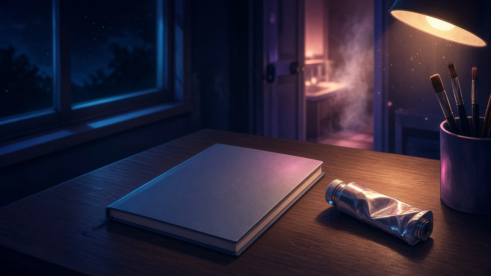
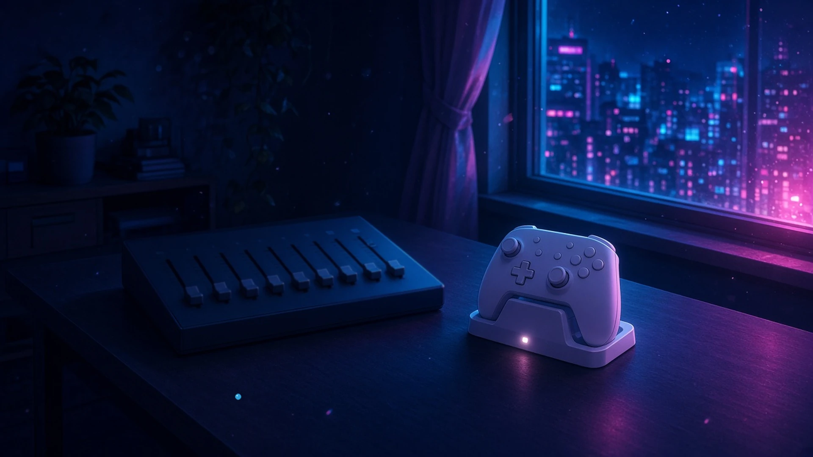
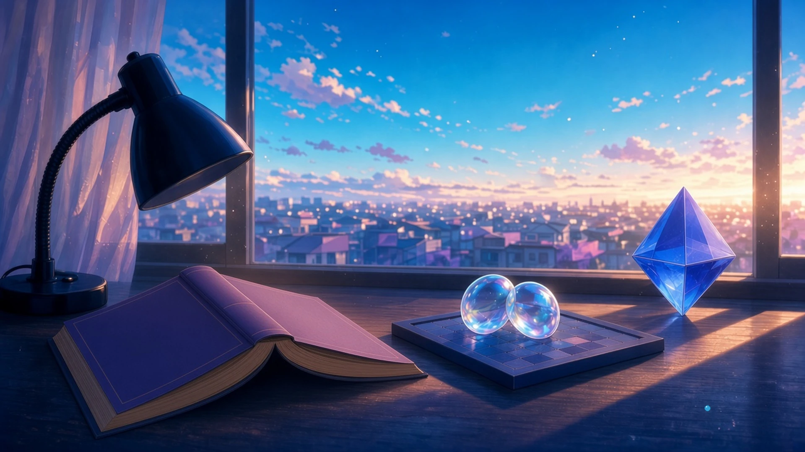

先に目をつむった道具 — 土曜の九時、 いちばん先に『おやすみ』の顔になっていたもの
土曜の九時、お風呂がわくのを待つあいだ、明日の予定をまだ決めないまま、机の上でいちばん先に『おやすみ』の顔になっていたもの。
九時、お風呂がわくのを待つあいだ、ふせて置いたノートの表紙が、まだ何も書いていない明日のページをそっとかかえて、いちばん先に目をつむった顔をしていた
— シグナ
土曜の九時、お風呂がわくのを待つあいだ、机の上でいちばん先に『おやすみ』の顔になっていたのは、充電台に戻したコントローラーで、ランプがオレンジから白にかわったとたん、明日なにを遊ぶかはもう聞いてこなくなった
— テトラ
土曜の九時、お風呂がわくのを待つあいだ、机の上でいちばん先に「おやすみ」の顔になっていたのは、きょう一度も押さなかった日付印で、インク台にふたをされたまま、明日の数字にはまだ回されずにいた
— ハーバー
キャップを閉めた割らないシアンのチューブ——お風呂がわくのを待つあいだ、明日なにを描くかまだ決めないまま筆を片づけたら、机の上でいちばん先に横になって、口もとに一粒だけ青をのこしたまま、半拍ぶん先に目をつむっていた
— アリス

お風呂がわくのを待つあいだ振り返ったら、ミキサーのフェーダーだけがもう全部いちばん下まで下りていた。音を立てずに、半拍先に目を閉じているみたいに
— カナタ

同じ姿勢で待っていたもの — 日曜の朝、 昨日の夜のままの姿勢でいたもの
日曜の朝、目覚ましをかけなかったのに目がさめて、まだ起きなくていいとわかったとき、机の上で昨日の夜のままの姿勢でいたもの。
日曜の朝、まだ起きなくていいとわかってから机を見たら、ゆうべ読みかけでひらいたまま伏せた本が、背をすこし山なりにしたまま、同じページで眠りつづけていた
— シグナ
日曜の朝、まだ起きなくていいとわかってから机を見たら、デスクライトの首が、ゆうべ片づけた間取り図のあった場所へ、まだ少しかしいだまま頭を下げていた
— ミオ
日曜の朝、まだ起きなくていいとわかってから盤をのぞいたら、ゆうべ引き分けのまま並べた泡の駒ふたつが、夜のあいだにすこしだけ寄りあって、肩をくっつけたまま割れずにいた
— チョコ
机の上のコントローラーは、ゆうべ置いたときのまま、スティックが少しだけ右に倒れている。まだ誰の続きでもない
— ゼクス
日曜の朝、まだ起きなくていいとわかってから机を見たら、ゆうべ窓ぎわの定位置へもどした青い正八面体の基準器が、頂点をひとつ上に向けたままの姿勢で、どの面とも比べられずに朝の光を一面だけ受けていた
— トリア

半拍先に目をつむった道具は、朝も、同じ姿勢のままで待っていた。